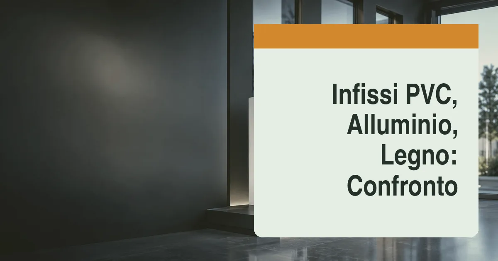

Come cambiano le prestazioni tra PVC, alluminio e legno?
Le prestazioni di una finestra si leggono su tre parametri: la trasmittanza termica Uw (quanto calore disperde: più bassa è, meglio è), l'abbattimento acustico Rw (quanto rumore ferma) e la tenuta ad aria, acqua e vento (classi di permeabilità). Sul primo fronte, il PVC è intrinsecamente isolante: un profilo a 5-7 camere con vetro doppio o triplo raggiunge Uw di 0,9-1,3 W/m²K senza sofisticazioni, ed è per questo che domina le ristrutturazioni energetiche. Il legno ha prestazioni termiche naturalmente ottime, Uw tipici di 1,0-1,4 W/m²K, con il plus della massa e del comfort percepito. L'alluminio, conduttore per natura, raggiunge valori comparabili (1,1-1,6 W/m²K) solo nei profili a taglio termico di fascia alta, con barrette isolanti e vetri performanti: i vecchi serramenti in alluminio senza taglio termico sono fuori da ogni parametro moderno.
Sull'acustica il materiale conta meno del vetro: un vetrocamera asimmetrico con lastra stratificata fonoassorbente spinge qualsiasi telaio a 38-42 dB di abbattimento, sufficienti per il traffico urbano. La differenza la fanno la posa e i giunti. Sulla tenuta meccanica, invece, l'alluminio vince netto: permette ante grandi, profili sottili e scorrevoli di grande luce che in PVC richiederebbero rinforzi importanti e in legno sezioni maggiorate.
Quanto durano e quanta manutenzione richiedono?
L'alluminio è il materiale della zero-manutenzione: verniciatura a polveri o anodizzazione durano decenni, non teme sole, pioggia né salsedine, e la vita utile supera i 40-50 anni. Il PVC moderno si difende bene — i profili di fascia alta resistono a ingiallimento e deformazioni per 30-40 anni — ma chiede attenzione alle guarnizioni e alla ferramenta, da lubrificare periodicamente; sulle esposizioni sud e in zone molto calde conviene scegliere profili con rinforzi dimensionati correttamente. Il legno è il più esigente: la verniciatura va ritoccata ogni 5-8 anni sulle esposizioni critiche (di più sotto gronda, dove la manutenzione si riduce drasticamente), ma in cambio dura 50 anni e oltre, è riparabile e rilevabile in loco, e invecchia con dignità. Esiste infine il compromesso di successo del legno-alluminio: legno dentro, guscio in alluminio fuori, manutenzione quasi nulla e prezzo da fascia premium.
Quanto costano gli infissi al mq nel 2026?
Incrociando i listini 2026 di produttori e serramentisti, per una finestra a due ante con vetrocamera basso-emissivo, fornitura e posa esclusa salvo diversa indicazione:
- PVC: 250-450 euro/mq (fascia alta con profili a 7 camere e triplo vetro: 400-550 euro/mq).
- Alluminio a taglio termico: 400-700 euro/mq; i sistemi minimal a taglio sottile superano i 900 euro/mq.
- Legno (larice, pino lamellare, rovere): 500-900 euro/mq.
- Legno-alluminio: 700-1.100 euro/mq.
La posa in opera aggiunge 50-120 euro/mq a seconda del metodo (posa tradizionale o posa certificata con controtelaio e barriere a tenuta), e i lavori accessori — rimozione, smaltimento, ripristino soglie e davanzali — possono valere altri 80-200 euro a finestra. Per un appartamento con 5-6 finestre, la sostituzione completa in PVC di fascia media si colloca tra 6.000 e 10.000 euro posa inclusa; in legno-alluminio tra 10.000 e 16.000 euro. Attenzione ai preventivi anomali verso il basso: sotto certe soglie si nascondono profili di importazione senza certificazione o posa sommaria, che vanifica trasmittanza e tenuta. Fasi, materiali e controlli della posa qualificata secondo la UNI 11673 sono nella nostra guida alla posa in opera certificata degli infissi.
La tabella comparativa definitiva
| Parametro | PVC | Alluminio (taglio termico) | Legno |
|---|---|---|---|
| Trasmittanza Uw tipica | 0,9-1,3 W/m²K | 1,1-1,6 W/m²K | 1,0-1,4 W/m²K |
| Prezzo al mq (fornitura) | 250-450 € | 400-700 € | 500-900 € |
| Vita utile | 30-40 anni | 40-50 anni | 50+ anni |
| Manutenzione | Bassa (guarnizioni, ferramenta) | Quasi nulla | Media (riverniciatura 5-8 anni) |
| Grandi luci e scorrevoli | Limitato | Eccellente | Buono |
| Estetica e vincoli | Standard, finiture effetto legno | Moderna, profili sottili | Pregiata, ideale in centri storici |
Quale materiale scegliere per clima ed edificio?
Tre scenari pratici. Ristrutturazione energetica con budget controllato (appartamento in condominio, zone climatiche D-E): il PVC a 6-7 camere con triplo vetro è la scelta razionale, massima resa per euro speso. Villa moderna con grandi vetrate e scorrevoli: alluminio a taglio termico, anche in combinazione mista (alluminio sulle luci grandi, PVC sulle finestre di servizio), soluzione che i progettisti adottano sempre più spesso. Centro storico, edificio vincolato o casa di pregio: legno o legno-alluminio, spesso imposti dalla Soprintendenza per profili e colori, con il vantaggio della riparabilità nel tempo. In montagna e sulle esposizioni nord il legno resta apprezzato per il comfort superficiale; in fascia costiera l'alluminio anodizzato resiste meglio alla salsedine. Per la scelta del marchio, la nostra selezione dei 5 migliori produttori di serramenti in Italia confronta gamme, garanzie e reti di posa.
Quali detrazioni si applicano alla sostituzione?
La sostituzione degli infissi nel 2026 può seguire due percorsi fiscali. Il primo è la detrazione per ristrutturazione edilizia: 50% sull'abitazione principale e 36% sulle altre unità, massimale 96.000 euro, recupero in 10 anni, con la sola condizione di variare materiale o dimensione dei serramenti rispetto all'esistente (regole e adempimenti nella guida alle detrazioni 50% e 36%). Il secondo è l'Ecobonus, che premia il miglioramento energetico: richiede il rispetto dei valori limite di trasmittanza Uw per zona climatica (da 1,0-1,1 W/m²K in zona F fino a 1,4 W/m²K in zona A-B, secondo le tabelle ministeriali) e la trasmissione della pratica ENEA entro 90 giorni. I dettagli su requisiti, massimali e documenti sono nella nostra guida all'Ecobonus. In entrambi i casi: pagamento con bonifico parlante, fatture coerenti con la pratica edilizia (CILA) e conservazione di schede tecniche e certificazione delle prestazioni.
«Il serramento perfetto posato male è peggio di un serramento medio posato bene: la trasmittanza del nodo finestra-muro vale quanto quella del vetro. Chiedete sempre la posa certificata e il collaudo della tenuta all'aria.»
Come scegliere la vetrocamera giusta?
Il confronto tra i materiali del telaio non deve far dimenticare che in una finestra moderna il vetro occupa il 70-80% della superficie e decide da solo gran parte delle prestazioni. Tre parametri vanno letti sulla scheda della vetrocamera: la trasmittanza Ug (1,0-1,1 W/mqK per un buon doppio basso emissivo, 0,5-0,7 per un triplo), il fattore solare g (0,60 standard, 0,35-0,42 sui selettivi che bloccano il calore estivo) e l'abbattimento acustico (38-42 dB con lastra stratificata fonoassorbente). Il trattamento basso emissivo è ormai standard e non va pagato come optional; il selettivo serve davvero su esposizioni sud e ovest e al Sud Italia; il triplo vetro trova la sua ragione in zone climatiche E-F e in case con pompa di calore.
Il dettaglio tecnico completo — parametri, tipi di vetro, scelta per zona climatica e costi di sostituzione delle sole vetrocamere — è nella nostra guida ai vetri basso emissivi e selettivi. E quando i telai esistenti sono ancora sani, ricordare che la sostituzione delle sole vetrocamere costa un terzo dell'infisso completo e rientra comunque nelle detrazioni, purché migliori la trasmittanza dichiarata.
Manutenzione e durata attesa per materiale
La durata reale di un serramento dipende dal materiale ma soprattutto dalla manutenzione: ecco cosa aspettarsi e cosa prevedere nei 30 anni di vita dell'intervento.
| Materiale | Vita attesa | Manutenzione richiesta | Punto critico |
|---|---|---|---|
| PVC | 30-40 anni | Minima: pulizia, lubrificazione ferramenta, guarnizioni ogni 15-20 anni | Deformazione su ante grandi esposte a sud senza rinforzi |
| Alluminio taglio termico | 40-50 anni | Quasi nulla: verniciatura o anodizzazione non si rifanno | Condensa sui profili se il taglio termico è di fascia bassa |
| Legno | 30-50 anni | Alta: riverniciatura ogni 5-8 anni, controllo umidità | Degrado della finitura sulle esposizioni piovose |
| Legno-alluminio | 40-50 anni | Bassa: il guscio in alluminio protegge il legno | Costo iniziale più alto della categoria |
Tre interventi allungano la vita di qualsiasi serramento a costo irrisorio: la regolazione annuale della ferramenta (le ante che strusciano si correggono con una brugola in dieci minuti, trascurate rovinano cerniere e telai), la sostituzione delle guarnizioni quando si induriscono — costo di pochi euro al metro, effetto immediato su spifferi e acustica — e il controllo dei fori di drenaggio sul profilo esterno, che intasati fanno ristagnare l'acqua nel telaio. Una finestra posata bene e mantenuta con questi tre gesti supera tranquillamente i trent'anni; la stessa finestra trascurata ne mostra quindici malissimo.
Domande frequenti
Meglio infissi in PVC o in alluminio?
Il PVC vince su prezzo e isolamento a parità di budget; l'alluminio a taglio termico su durata, zero manutenzione e grandi vetrate.
Quanto costa cambiare le finestre di un appartamento?
Tra 6.000 e 10.000 euro in PVC per 5-6 finestre, posa inclusa; fino a 16.000 euro in legno-alluminio. La detrazione recupera fino al 50% in 10 anni.
Gli infissi in legno richiedono molta manutenzione?
Riverniciatura ogni 5-8 anni sulle esposizioni critiche, meno sotto gronda. Il legno-alluminio riduce la manutenzione esterna quasi a zero.
Che valore di trasmittanza serve per le detrazioni?
Indicativamente Uw da 1,0-1,1 a 1,4 W/m²K a seconda della zona climatica, con pratica ENEA obbligatoria entro 90 giorni.
Conviene il triplo vetro in Italia?
Sì nelle zone E-F e in montagna; nelle zone miti un buon doppio basso-emissivo basta, meglio investire in schermature e posa certificata.
Meglio sostituire gli infissi o solo le vetrocamere?
Solo i vetri se i telai sono sani e squadrati: costa un terzo. Con telai datati o giunti che perdono aria, l'infisso completo con posa certificata rende molto di più.
Fonti: Listini 2026 di produttori e serramentisti italiani; norme UNI su trasmittanza (EN ISO 10077) e posa in opera; decreti requisiti minimi e tabelle di trasmittanza limite per l'Ecobonus; guide Agenzia delle Entrate ed ENEA. Prezzi indicativi per forniture standard: i preventivi reali dipendono da misure, vetri, ferramenta e condizioni di posa.